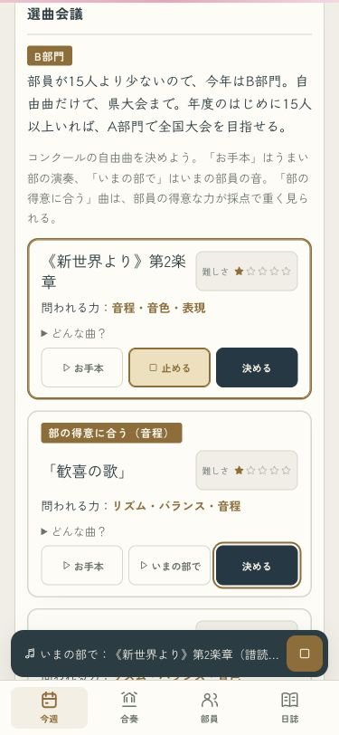
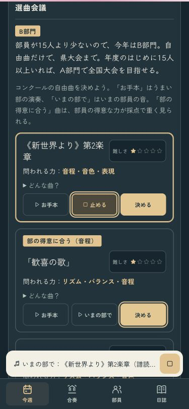
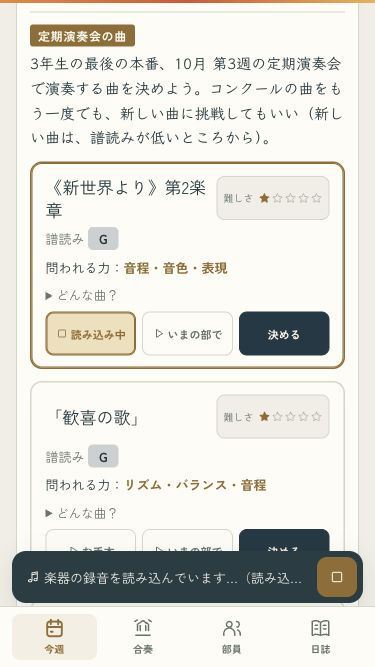
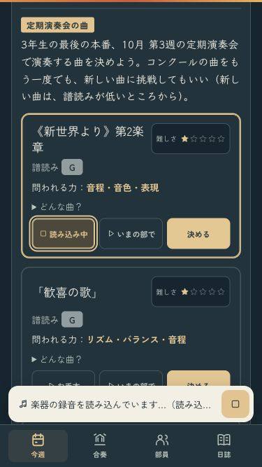

B · 舞台の中へ
この曲を、いまの部で。
聴いている曲と聴き方が、金色の枠で分かります。同じボタンでもう一度押すと止まり、読み込み中も中止できます。


小さい画面と、読み込み待ち
375×667でもボタンは44px以上。お手本・いまの部で・決めるを3列に保ちます。


全15曲の試聴・切り替え・待機の中止・1年分の進行を確認済み。
iPhoneへ更新済み。端末ロック中のため起動は未確認です。
ミラーリングなし · codex/design · pushなし · 変更と確認の記録